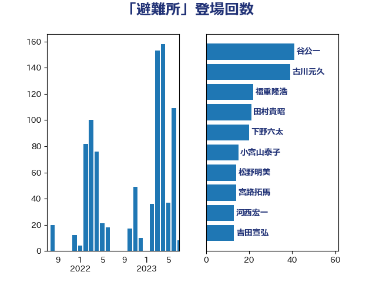

単語「避難所」

| 美延映夫 | 日本維新の会 | 48 回 |
| 古川元久 | 国民民主党 | 35 回 |
| 田村貴昭 | 日本共産党 | 34 回 |
| 浜口誠 | 国民民主党 | 27 回 |
| 菅義偉 | 自由民主党 | 22 回 |
| 本田太郎 | 自由民主党 | 20 回 |
| 福重隆浩 | 公明党 | 20 回 |
| 赤澤亮正 | 自由民主党 | 18 回 |
| 根本幸典 | 自由民主党 | 17 回 |
| 野中厚 | 自由民主党 | 17 回 |
| 高木啓 | 自由民主党 | 14 回 |
| 小宮山泰子 | 立憲民主党 | 11 回 |
| 小寺裕雄 | 自由民主党 | 11 回 |
| 熊谷裕人 | 立憲民主党 | 11 回 |
| 若松謙維 | 公明党 | 11 回 |
| 平木大作 | 公明党 | 10 回 |
| 室井邦彦 | 日本維新の会 | 9 回 |
| 吉田はるみ | 立憲民主党 | 8 回 |
| 和田義明 | 自由民主党 | 8 回 |
| 小沢雅仁 | 立憲民主党 | 8 回 |
| 浜田聡 | NHK党 | 8 回 |
| 牧島かれん | 自由民主党 | 8 回 |
| 伊藤孝恵 | 国民民主党 | 7 回 |
| 城井崇 | 立憲民主党 | 7 回 |
| 大口善徳 | 公明党 | 7 回 |
| 末松信介 | 自由民主党 | 7 回 |
| 串田誠一 | 日本維新の会 | 6 回 |
| 加田裕之 | 自由民主党 | 6 回 |
| 岡本あき子 | 立憲民主党 | 6 回 |
| 水岡俊一 | 立憲民主党 | 6 回 |
| 自見はなこ | 自由民主党 | 6 回 |
| 西田昭二 | 自由民主党 | 6 回 |
| 井上信治 | 自由民主党 | 5 回 |
| 塩村あやか | 立憲民主党 | 5 回 |
| 宮路拓馬 | 自由民主党 | 5 回 |
| 小泉進次郎 | 自由民主党 | 5 回 |
| 平山佐知子 | 無所属 | 5 回 |
| 津島淳 | 自由民主党 | 5 回 |
| 石井苗子 | 日本維新の会 | 5 回 |
| 竹谷とし子 | 公明党 | 5 回 |
| 足立敏之 | 自由民主党 | 5 回 |
| 阿部知子 | 立憲民主党 | 5 回 |
| 上川陽子 | 自由民主党 | 4 回 |
| 岸田文雄 | 自由民主党 | 4 回 |
| 田中健 | 国民民主党 | 4 回 |
| 萩生田光一 | 自由民主党 | 4 回 |
| 赤羽一嘉 | 公明党 | 4 回 |
| 鈴木貴子 | 自由民主党 | 4 回 |
| 高橋千鶴子 | 日本共産党 | 4 回 |
| 一谷勇一郎 | 日本維新の会 | 3 回 |
| 丸川珠代 | 自由民主党 | 3 回 |
| 大塚耕平 | 国民民主党 | 3 回 |
| 山崎正恭 | 公明党 | 3 回 |
| 新妻秀規 | 公明党 | 3 回 |
| 枝野幸男 | 立憲民主党 | 3 回 |
| 柴田巧 | 日本維新の会 | 3 回 |
| 森山浩行 | 立憲民主党 | 3 回 |
| 舩後靖彦 | れいわ新選組 | 3 回 |
| 野田聖子 | 自由民主党 | 3 回 |
| 三ッ林裕巳 | 自由民主党 | 2 回 |
| 古川禎久 | 自由民主党 | 2 回 |
| 吉田忠智 | 立憲民主党 | 2 回 |
| 和田政宗 | 自由民主党 | 2 回 |
| 堀内詔子 | 自由民主党 | 2 回 |
| 塩川鉄也 | 日本共産党 | 2 回 |
| 大家敏志 | 自由民主党 | 2 回 |
| 小里泰弘 | 自由民主党 | 2 回 |
| 尾崎正直 | 自由民主党 | 2 回 |
| 山崎誠 | 立憲民主党 | 2 回 |
| 平井卓也 | 自由民主党 | 2 回 |
| 横山信一 | 公明党 | 2 回 |
| 秋野公造 | 公明党 | 2 回 |
| 荒井優 | 立憲民主党 | 2 回 |
| 藤丸敏 | 自由民主党 | 2 回 |
| 藤原崇 | 自由民主党 | 2 回 |
| 西岡秀子 | 国民民主党 | 2 回 |
| 西田実仁 | 公明党 | 2 回 |
| 角田秀穂 | 公明党 | 2 回 |
| 鈴木憲和 | 自由民主党 | 2 回 |
| 鰐淵洋子 | 公明党 | 2 回 |
| 麻生太郎 | 自由民主党 | 2 回 |
| 中西祐介 | 自由民主党 | 1 回 |
| 中野洋昌 | 公明党 | 1 回 |
| 井上哲士 | 日本共産党 | 1 回 |
| 今井絵理子 | 自由民主党 | 1 回 |
| 伊藤孝江 | 公明党 | 1 回 |
| 吉田宣弘 | 公明党 | 1 回 |
| 坂本哲志 | 自由民主党 | 1 回 |
| 塩崎彰久 | 自由民主党 | 1 回 |
| 小山展弘 | 立憲民主党 | 1 回 |
| 小沼巧 | 立憲民主党 | 1 回 |
| 小熊慎司 | 立憲民主党 | 1 回 |
| 山口那津男 | 公明党 | 1 回 |
| 山添拓 | 日本共産党 | 1 回 |
| 山田太郎 | 自由民主党 | 1 回 |
| 島尻安伊子 | 自由民主党 | 1 回 |
| 川田龍平 | 立憲民主党 | 1 回 |
| 庄子賢一 | 公明党 | 1 回 |
| 斎藤嘉隆 | 立憲民主党 | 1 回 |
| 早坂敦 | 日本維新の会 | 1 回 |
| 木村英子 | れいわ新選組 | 1 回 |
| 松木けんこう | 立憲民主党 | 1 回 |
| 松本尚 | 自由民主党 | 1 回 |
| 梅村みずほ | 日本維新の会 | 1 回 |
| 梶山弘志 | 自由民主党 | 1 回 |
| 横沢高徳 | 立憲民主党 | 1 回 |
| 橋本聖子 | 無所属 | 1 回 |
| 武田良太 | 自由民主党 | 1 回 |
| 池田佳隆 | 自由民主党 | 1 回 |
| 浮島智子 | 公明党 | 1 回 |
| 片山さつき | 自由民主党 | 1 回 |
| 田名部匡代 | 立憲民主党 | 1 回 |
| 田村智子 | 日本共産党 | 1 回 |
| 石井啓一 | 公明党 | 1 回 |
| 紙智子 | 日本共産党 | 1 回 |
| 芳賀道也 | 国民民主党 | 1 回 |
| 西銘恒三郎 | 自由民主党 | 1 回 |
| 豊田俊郎 | 自由民主党 | 1 回 |
| 進藤金日子 | 自由民主党 | 1 回 |
| 鎌田さゆり | 立憲民主党 | 1 回 |
| 長峯誠 | 自由民主党 | 1 回 |
| 音喜多駿 | 日本維新の会 | 1 回 |
| 馬場成志 | 自由民主党 | 1 回 |